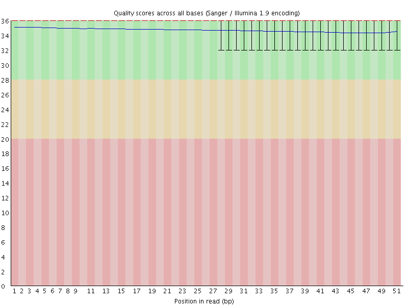
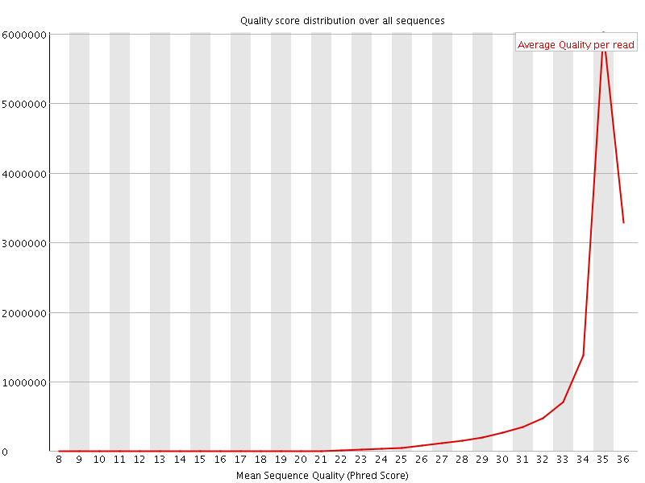
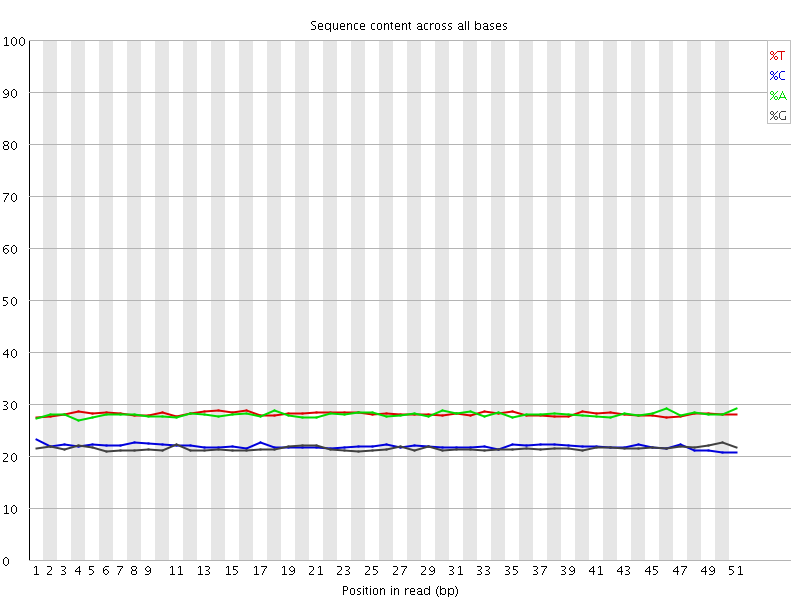
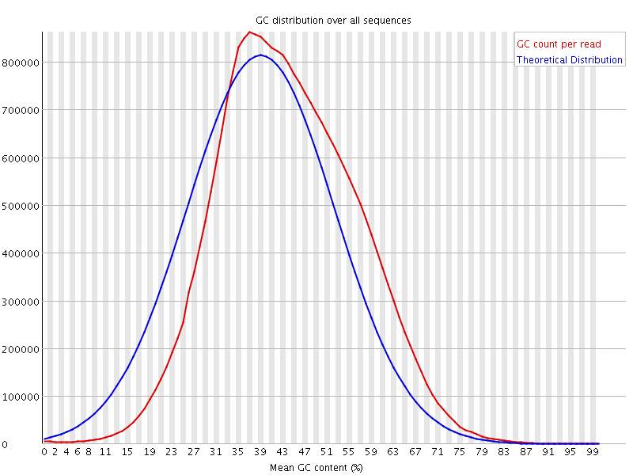
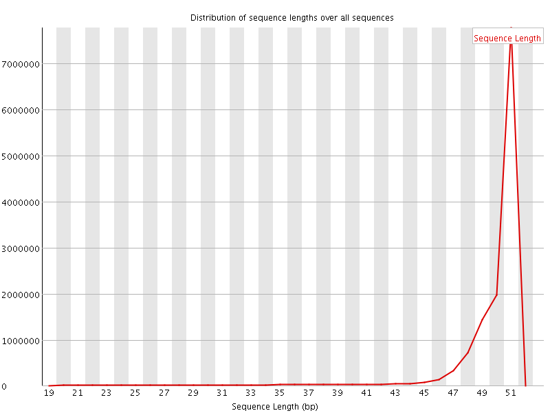
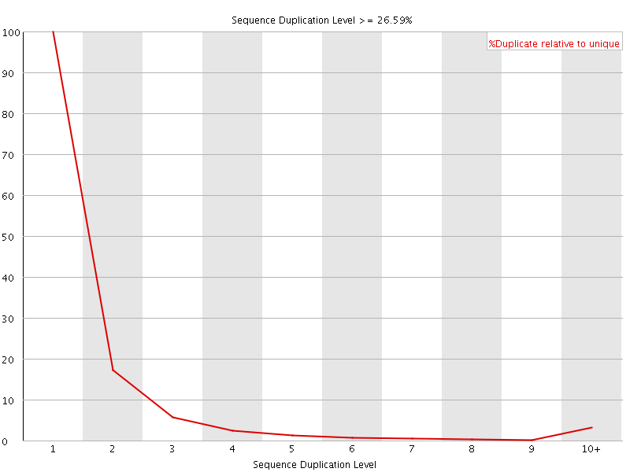
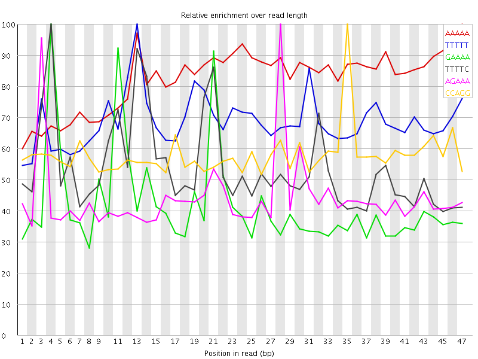

![[OK]](Icons/tick.png) Basic Statistics
Basic Statistics
| Measure | Value |
|---|---|
| Filename | 040-F0_S2_L004_R1_001_trimmed.fq.gz |
| File type | Conventional base calls |
| Encoding | Sanger / Illumina 1.9 |
| Total Sequences | 13217881 |
| Filtered Sequences | 0 |
| Sequence length | 20-51 |
| %GC | 43 |
Per base sequence quality

Per sequence quality scores

Per base sequence content

Per base GC content

![[WARN]](Icons/warning.png) Per sequence GC content
Per sequence GC content

Per base N content

Sequence Length Distribution

Sequence Duplication Levels

Overrepresented sequences
No overrepresented sequences
Kmer Content

| Sequence | Count | Obs/Exp Overall | Obs/Exp Max | Max Obs/Exp Position |
|---|---|---|---|---|
| AAAAA | 4335825 | 4.1095085 | 4.99725 | 47 |
| TTTTT | 4297450 | 3.994244 | 5.814072 | 13 |
| GAAAA | 2495925 | 3.0786972 | 7.3285046 | 4 |
| TTTTC | 2553015 | 3.042241 | 5.6277866 | 4 |
| AGAAA | 2461210 | 3.0358765 | 6.8689613 | 28 |
| CCAGG | 1134255 | 2.969605 | 5.1283507 | 35 |
| GGAAA | 1463570 | 2.3494496 | 7.268171 | 20 |
| GAGAA | 1451850 | 2.3306355 | 7.47424 | 27 |
| AAAAT | 2376725 | 2.2438726 | 5.18552 | 22 |
| CCACC | 850665 | 2.1446052 | 5.2917075 | 8 |
| TGGAA | 1317100 | 2.1060686 | 5.2518616 | 19 |
| TGAAA | 1626180 | 1.9980443 | 5.809195 | 10 |
| CTGAA | 1245280 | 1.9539849 | 6.7265434 | 9 |
| AAATG | 1553870 | 1.9091991 | 5.875786 | 23 |
| CATTT | 1555940 | 1.8613671 | 5.661615 | 1 |
| AAAAC | 1504030 | 1.8205067 | 5.449025 | 5 |
| GTGGA | 825045 | 1.7169144 | 5.288259 | 47 |
| TGAGA | 1065095 | 1.7031077 | 6.77503 | 26 |
| CATGG | 770020 | 1.5724376 | 5.509857 | 17 |
| AATGA | 1182720 | 1.4531767 | 5.3606696 | 24 |
| ATGAG | 872020 | 1.394377 | 6.419757 | 25 |
| CTTGA | 888625 | 1.3889091 | 5.419552 | 47 |
| CACTT | 900955 | 1.3818433 | 5.636949 | 37 |
| AACTG | 879260 | 1.379658 | 6.0092864 | 7 |
| ACTGA | 867735 | 1.3615742 | 5.9886193 | 8 |
| AAATC | 1071625 | 1.2920513 | 5.1390004 | 13 |